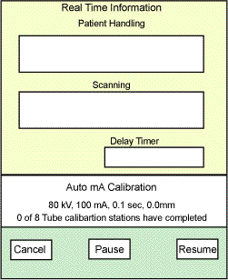

Proprietary to General Electric
Direction 5114043-800, Rev# 9
LightSpeed 3.X Service Methods (Advanced)
Proprietary to General Electric |
Use the Generator Characterization Program to update the “small spot” and “large spot” characterization files, to provide a starting point for the closed loop mode of the generator. This iterative process requires several scans at a different KV/MA/spot size. It calculates corrections, repeats the scan until the results fall within tolerance, then updates the characterization file.
Select [SERVICE DESKTOP] .
Select [REPLACEMENT] .
Select [HV Subsystem Change] .
Select [Generator Characterization] .
Illustration 1: Proprietary Generator Characterization Menu Screen

Illustration 2: Auto mA Calibration Status Screen
